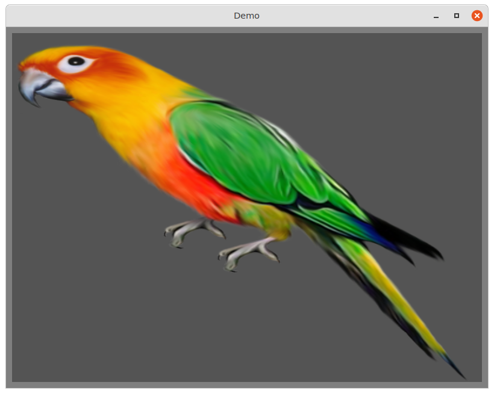
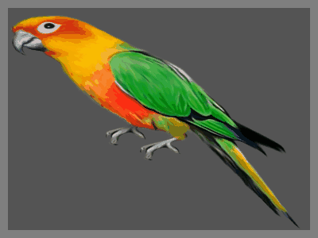

The demos require MulleUI to run.
This demo reads a parrot.jpg file and displays it

This demo creates 10 frames of a simple animation with parrot.jpg and
produces an animated GIF with them

This is a mulle-sde project.
It comes with its own virtual environment and list of dependencies. To fetch and build everything say:
mulle-sde craft